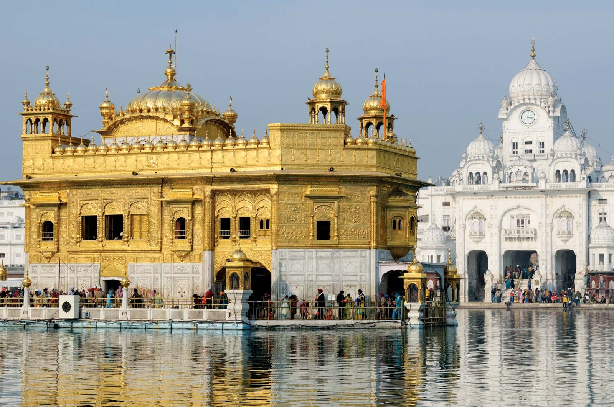

Punjab
"India Begins Here"
Quick Facts
Popular Tourist Attractions
Golden Temple
The spiritual and cultural center of Sikhism in Amritsar.
Wagah Border
Famous for its daily military ceremony and patriotic spirit.
Jallianwala Bagh
A historic site that commemorates India's struggle for freedom.
Nature & Wildlife
Punjab's wildlife includes sanctuaries like Harike Wetland, Abohar Wildlife Sanctuary, and Bir Moti Bagh with species like blackbucks and migratory birds.
Famous Personalities
- Shaheed Bhagat Singh: Revered revolutionary freedom fighter.
- Diljit Dosanjh: Global Punjabi artist and actor.
- Milkha Singh: Legendary track athlete known as the 'Flying Sikh'.
Local Handicrafts
Punjab is known for phulkari embroidery, juttis (traditional footwear), and handcrafted wooden furniture.
Climate
Punjab experiences extreme temperatures — hot summers, cold winters, and monsoon rains between July and September.
Culture & Festivals
Dance
Bhangra and Giddha are vibrant and energetic traditional dances.
Festivals
Lohri and Baisakhi are major harvest and cultural festivals.
Food
Famous for dishes like Makki di Roti, Sarson da Saag, Chole Bhature, and Lassi.
Attire
Bright turbans, salwar kameez, and phulkari dupattas are commonly worn.
Did You Know? Punjab is called the 'Granary of India' because of its large-scale wheat and rice production.
Note: Information may be subject to updates. Kindly notify us of any discrepancies.